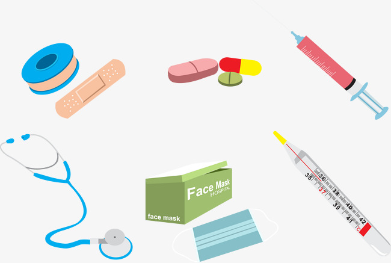

اسعاف الغريق
بعد إخراج الغريق من الماء يتم تنظيف فم الغريق وانفة بسرعة من العوالق، ثم يمد على ظهرة بحيث تكون راسة اسفل مستوى جسمه مع تقليبة من جنب إلى آخر والضغط الخفيف على البطن, وفي حال توقف التنفس تجرى عملية التنفس الصناعي فورا.
الصفحة الرئيسية